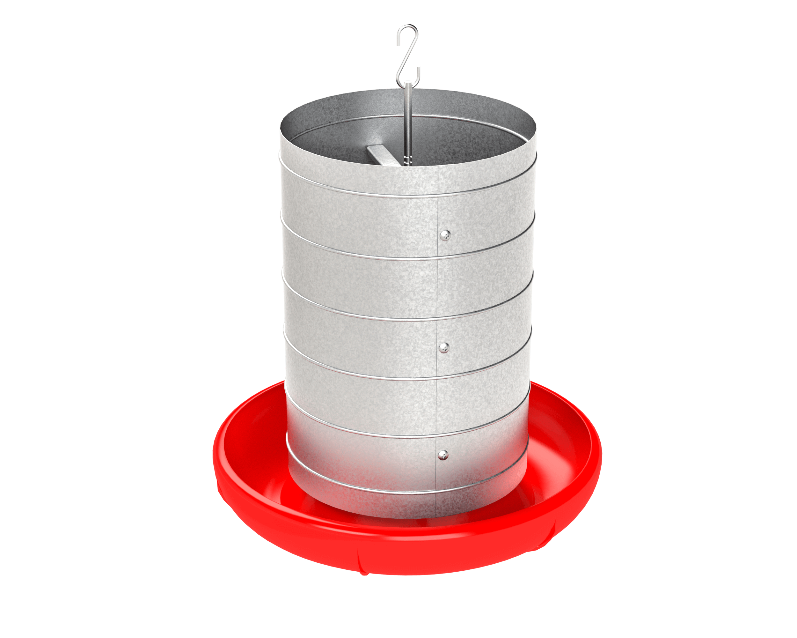

Visando minimizar o tempo de mão de obra, melhorar a disponibilidade
e diminuir a perca de suplementos. Chegou o cocho inteligente que ao mesmo
tempo evita a perca do suplemento seja por meio das chuvas ou brigas por espaço
nos cochos, minimiza o tempo gasto do produtor ou empregado repondo a suplementação
de tempos em tempos e não diariamente.
Auxiliar o produtor rural informando sobre o estado do suplemento mineral de seus
animais, assim otimizando o tempo do produtor, mantendo os animais com suplementação
proteico-mineral ideal, aumentando a eficiência da produtividade do gado, garantindo
o selo de gado verde.
Para auxiliar o produtor o software tem como funcionalidades
Identificar a quantidade de suplemento que o cocho possui, assim
notificando o produtor pelo WhatsApp quando o choco precisa ser reabastecido.
“A redução na idade de abate pode ser alcançada com um bom manejo das
pastagens (verde) complementada pelo fornecimento estratégico de um suplemento
(amarelo, cor do milho), criando-se o conceito do “Boi Verde-Amarelo”. [Thiago, Silva, 2006]
O boi verde pode ser abatido precocemente com 17 a 21 meses ou, super precoce, entre os 13 e 16 meses,
caso o mesmo atenda o peso ideal, para isso o animal criado a pasto necessita de suplementação mineral
e proteica, pois, no método tradicional o animal leva cerca de 3 anos para estar pronto para o abate.
Gado criado a pasto é mais valorizado, pois, sua carne é mais saborosa e
sustentável, entretanto o gado a pasto sofre com a carência de nutrientes
minerais e proteicos que só o pasto não consegue prover, com isso os suplementos
minerais e proteicos vieram para dar conta dessa demanda, porém os cochos usados
não atendem as demandas dos animais, por ser pequeno e mau estruturado causando
estresse por competitividade e desperdício por parte dos animais e do ambiente,
requerendo estrema atenção do produtor. Sendo assim o cocho inteligente visa
fornecer estrutura adequada para a suplementação e alertar o produtor quando
a necessidade de reabastecimento de seu cocho, assim evitando perca de tempo
e de desperdício além de aumentar sua produtividade.
O produto tem como referencial teórico o artigo Aspectos Práticos da
Suplementação Alimentar de Bovinos de Corte publicado pela Embrapa Gado
de Corte, Campo Grande / MS 2006, escrito por Luiz Roberto Lopes de S.
Thiago e José Marques da Silva.